Rainwater Terrarium
Your source for creating and maintaining beautiful rainwater terrariums.
About Rainwater Terrarium

Welcome to RainScape: A Rainwater Terrarium Experience
Discover the beauty of harmonizing nature and technology in a self-sustaining microcosm. Welcome to RainScape, where innovation meets ecology in the creation of mesmerizing Rainwater Terrariums. This digital experience invites you into a world where rainwater becomes the lifeblood of thriving ecosystems, encapsulated within captivating terrarium structures.
Explore the Elegance of Rainwater Terrariums:
RainScape is your gateway to the enchanting realm of Rainwater Terrariums. Marvel at the intricate designs that seamlessly blend modern functionality with the timeless beauty of nature. As you navigate through our digital exhibits, witness how these miniature ecosystems create a symphony of life, powered by the gentle touch of rain.
Unveiling the Secrets of Sustainability:
Delve into the core principles of sustainability as RainScape unravels the secrets behind Rainwater Terrariums. Learn how these models serve as a testament to the potential of rainwater harvesting, offering both aesthetic delight and ecological balance. From innovative design concepts to the selection of diverse flora, we unveil the intricacies of sustainable living encapsulated within a glass haven.
Interactive Learning for All:
RainScape is not just a showcase; it's an educational journey. Engage with interactive features that allow you to virtually explore the anatomy of Rainwater Terrariums. From the collection of rain droplets to the nurturing of plant life, embark on an immersive experience that fosters a deeper understanding of the delicate balance within these miniature ecosystems.
Inspiring a Greener Tomorrow:
Join us in our mission to inspire a greener tomorrow. RainScape goes beyond the screen to advocate for sustainable practices. Discover tips on creating your rainwater terrarium at home and learn how these models can be a catalyst for eco-friendly living. Let's cultivate a collective consciousness for a world where rainwater nurtures life in every corner.
Embark on Your RainScape Journey:
The RainScape website model is your portal to a world where rainwater transforms into a source of life. Whether you're a nature enthusiast, a tech-savvy innovator, or someone curious about sustainable living, RainScape invites you to explore, learn, and be inspired by the magic of Rainwater Terrariums.
SDG's Sustainable Development Goals:

Contribution to Climate Action (SDG 13):
.1.Promoting Sustainable Practices:
• This website can educate visitors on the sustainable practice of rainwater harvesting through terrariums. By encouraging individuals to collect and use rainwater for plant care, the project contributes to water conservation, a crucial aspect of climate action.
2.Carbon Sequestration and Biodiversity:
• Rainwater Terrariums, with lush plant life, contribute to carbon sequestration as plants absorb carbon dioxide. Additionally, the creation of micro-ecosystems supports biodiversity, aligning with climate action efforts to protect and restore ecosystems.
3.Raising Awareness on Climate Change Impact:
• The educational content on this website can highlight the impact of climate change on water resources and ecosystems. Increased awareness fosters a sense of urgency for climate action, encouraging visitors to make environmentally conscious choices.
4.Encouraging Green Practices:
• By showcasing the integration of nature and technology in Rainwater Terrariums, this project promotes green practices. This aligns with climate action goals by encouraging sustainable living choices that reduce environmental impact.
5.Community Engagement and Action:
• The website can serve as a platform for community engagement. Encourage visitors to share their experiences, ideas, and initiatives related to rainwater harvesting. Building a community around sustainable practices amplifies the impact of climate action efforts.
Contribution to Quality Education (SDG 4):

1.Interactive Learning:
• The interactive elements on this website, such as multimedia content, quizzes, and educational tools, provide an engaging learning experience. Interactive learning is a key aspect of quality education, promoting understanding and retention.
2.Informative Content:
• The comprehensive information about rainwater terrariums, their benefits, and sustainable practices contributes to quality education. Users can access valuable insights, fostering a deeper understanding of the environmental impact of their actions.
3.Multidisciplinary Approach:
• If your website incorporates elements from various disciplines like biology, environmental science, and technology, it promotes a multidisciplinary approach to education. This approach aligns with the goal of providing a holistic and well-rounded educational experience.
4.Accessible Learning Resources:
• Making educational materials accessible to a diverse audience contributes to quality education. Ensure that your website is user-friendly, provides clear information, and is accessible to individuals with different learning needs.
5.Community Learning Hub:
• Position your website as a hub for community learning. Encourage discussions, knowledge-sharing, and collaborative projects related to rainwater harvesting and sustainability. Community engagement enhances the educational impact of the project.
About Structure
1. Website Structure and Navigation:
• Observation: The website model successfully implements a clear and user-friendly structure. The navigation bar provides easy access to different sections, enhancing the overall user experience.
• Outcome: Users can seamlessly explore the various facets of rainwater terrariums, from construction methods to the benefits of incorporating these systems.
2. Visual Appeal and Responsiveness:
• Observation: The use of CSS stylesheets effectively enhances the visual appeal of the website. Additionally, responsive design ensures a consistent and engaging experience across different devices.
• Outcome: The website's aesthetic presentation encourages user engagement, while responsiveness caters to a diverse audience accessing the site from various devices.
3. Content Presentation:
• Observation: Content is structured logically, with each section providing valuable information about rainwater terrariums. The use of images and media effectively complements the textual content.
• Outcome: Users can easily grasp the key concepts of rainwater terrariums, from their construction components to the lush plant life within, creating an informative and visually appealing narrative.
4. Interactive Elements (Optional):
• Observation: The integration of interactive elements, if included, such as JavaScript libraries or animations, enhances user engagement.
• Outcome: Interactive features contribute to a more dynamic and immersive experience, capturing the user's interest and facilitating a deeper understanding of the topic.
1. User Engagement and Accessibility:
• Reflection: The positive reception of the website's structure and visual elements indicates successful user engagement. Accessibility features ensure that the content is inclusive and caters to a diverse audience.
• Considerations: Continual efforts should be made to maintain accessibility standards and explore additional features that enhance user interactivity without compromising accessibility.
2. Educational Impact:
• Reflection: The website effectively serves its educational purpose, providing insights into rainwater terrariums and sustainable practices.
• Considerations: Regular updates to the content and exploration of new educational tools can further enhance the website's role as a valuable resource for individuals interested in sustainable living.
3. Feedback and Iterative Improvements:
• Reflection: User feedback, if available, is considered for future improvements. This iterative approach ensures that the website evolves in response to user needs and technological advancements.
• Considerations: Regular solicitation of feedback and analysis of user behavior can inform future enhancements, ensuring the website remains relevant and effective.
4. Impact on Environmental Awareness:
• Reflection: The website's potential impact on raising awareness about rainwater harvesting and terrariums is acknowledged.
• Considerations: Collaborations with environmental organizations, outreach initiatives, or integration with social media can amplify the website's reach and influence on promoting sustainable practices.
5. Technological Considerations:
• Reflection: The use of HTML, CSS, and potentially JavaScript for interactive elements showcases the integration of technology with environmental education.
• Considerations: Staying updated with technological trends and exploring emerging tools can further enhance the website's technological appeal and functionality.
Terrarium Plants Gallery
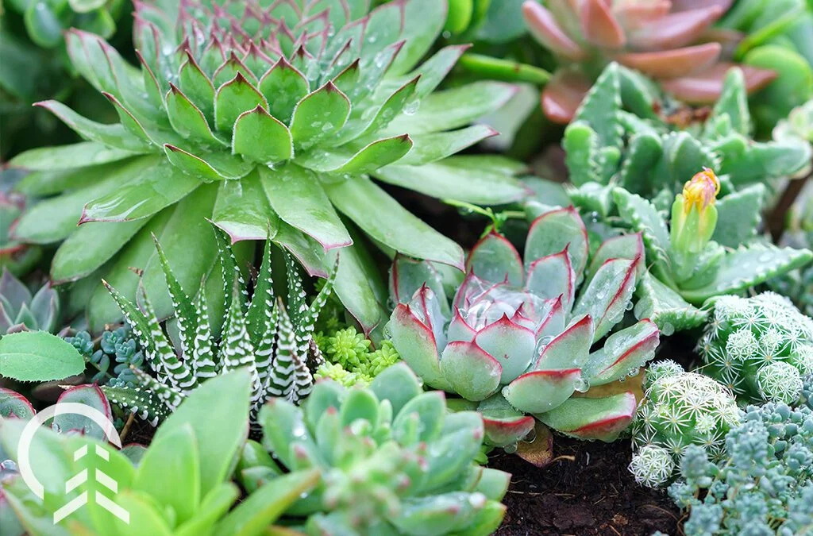 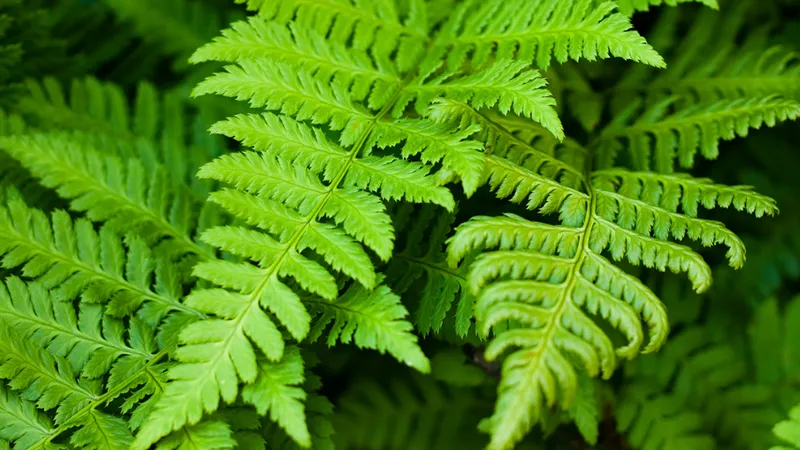
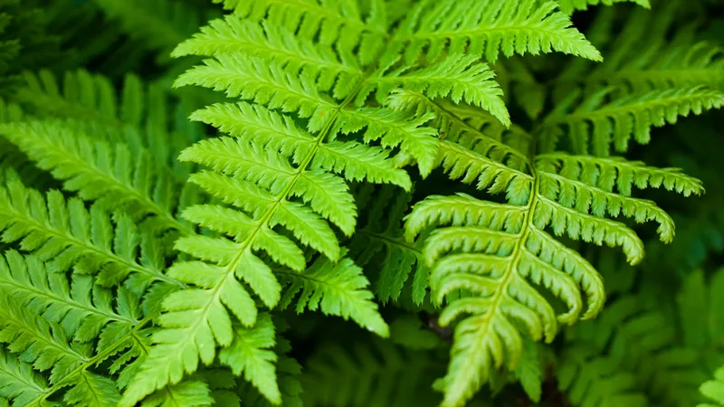

 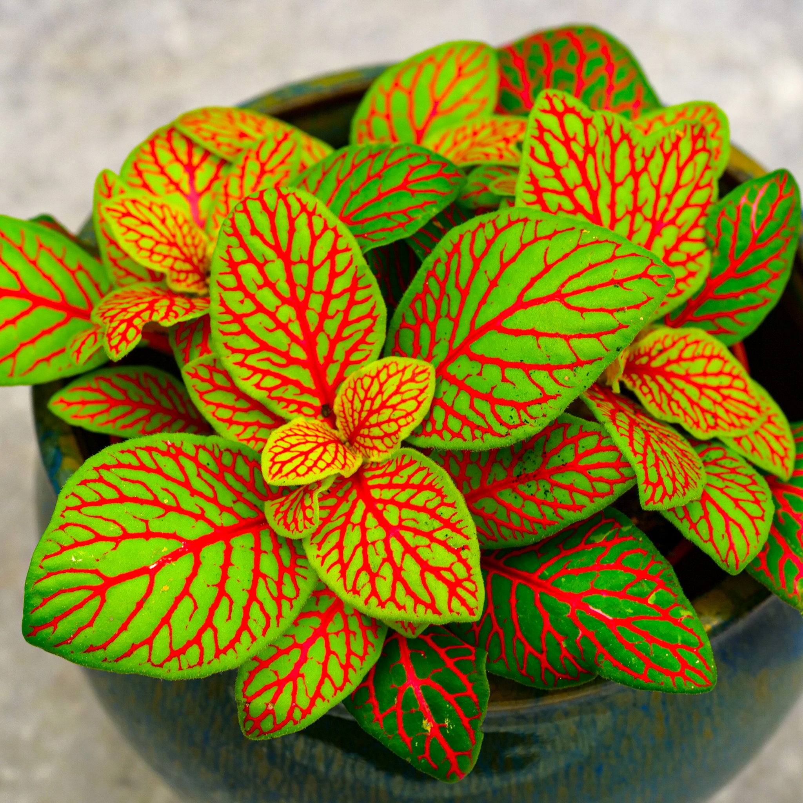
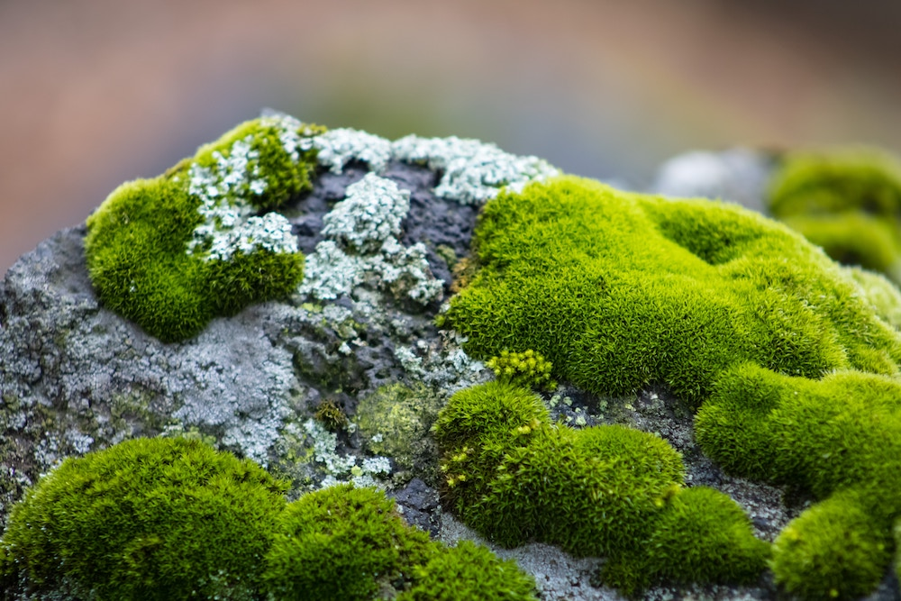
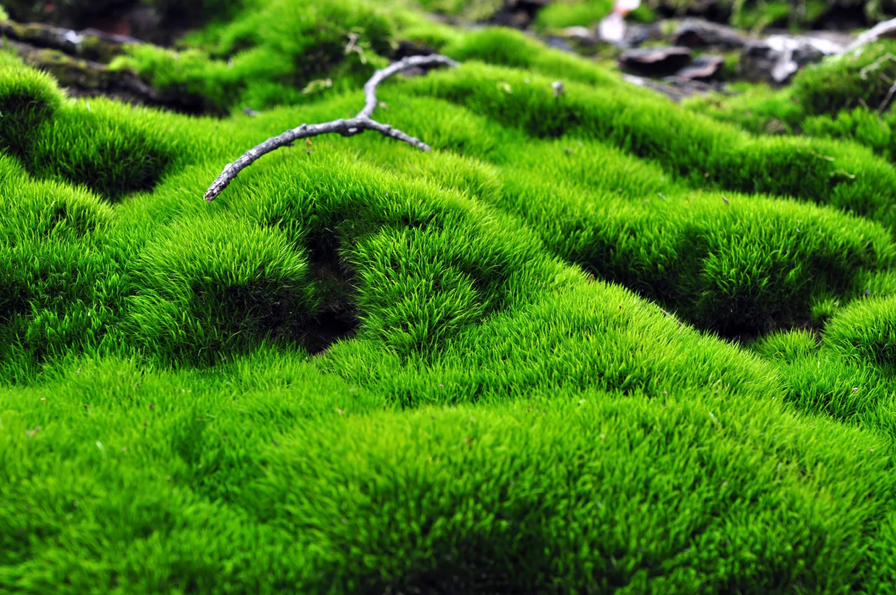
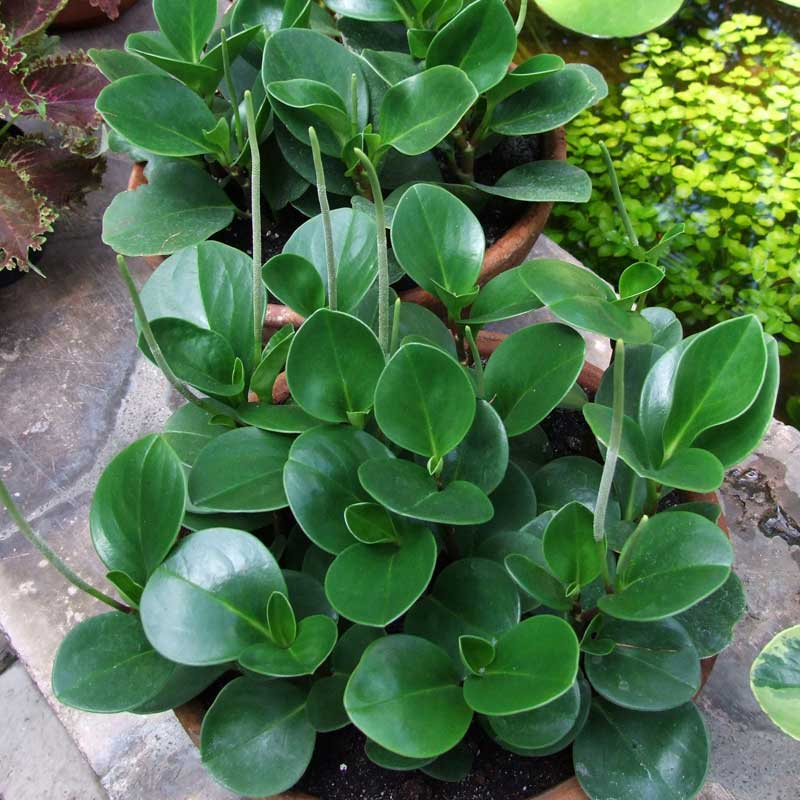
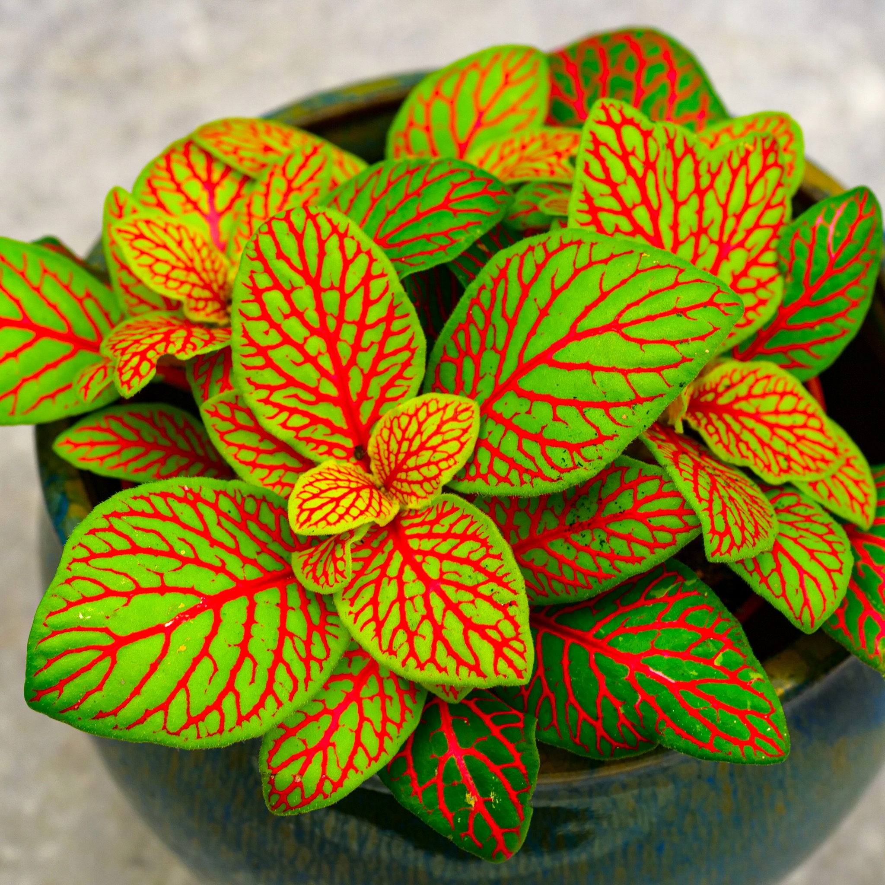
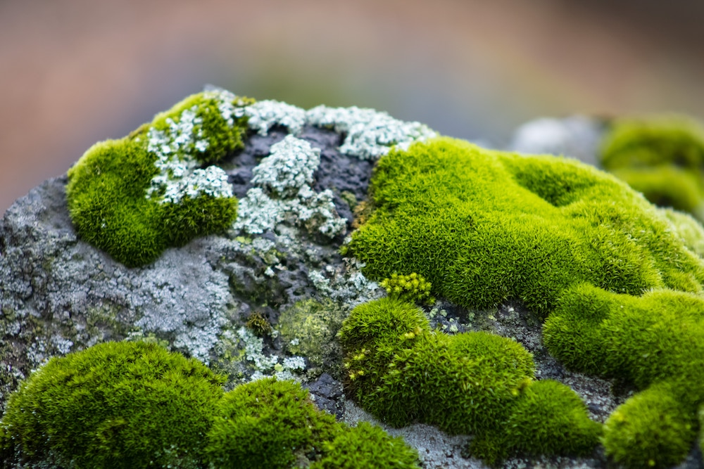
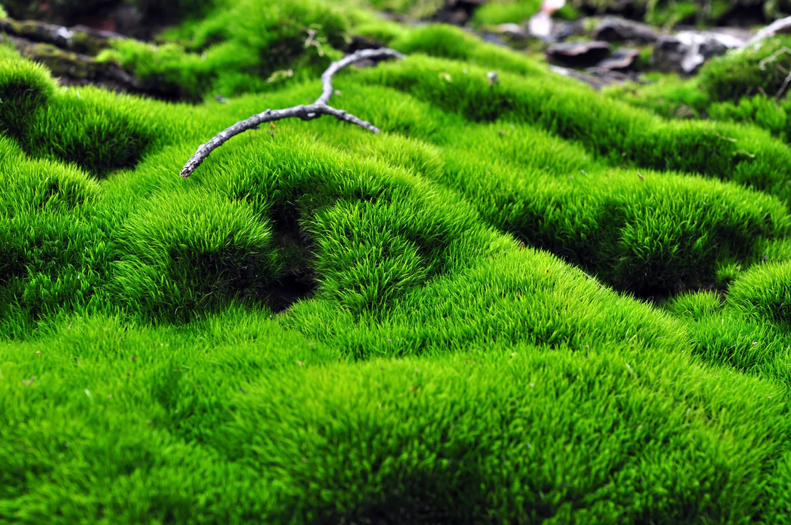
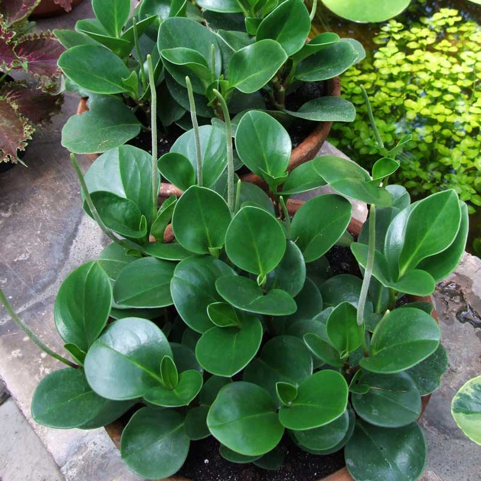
 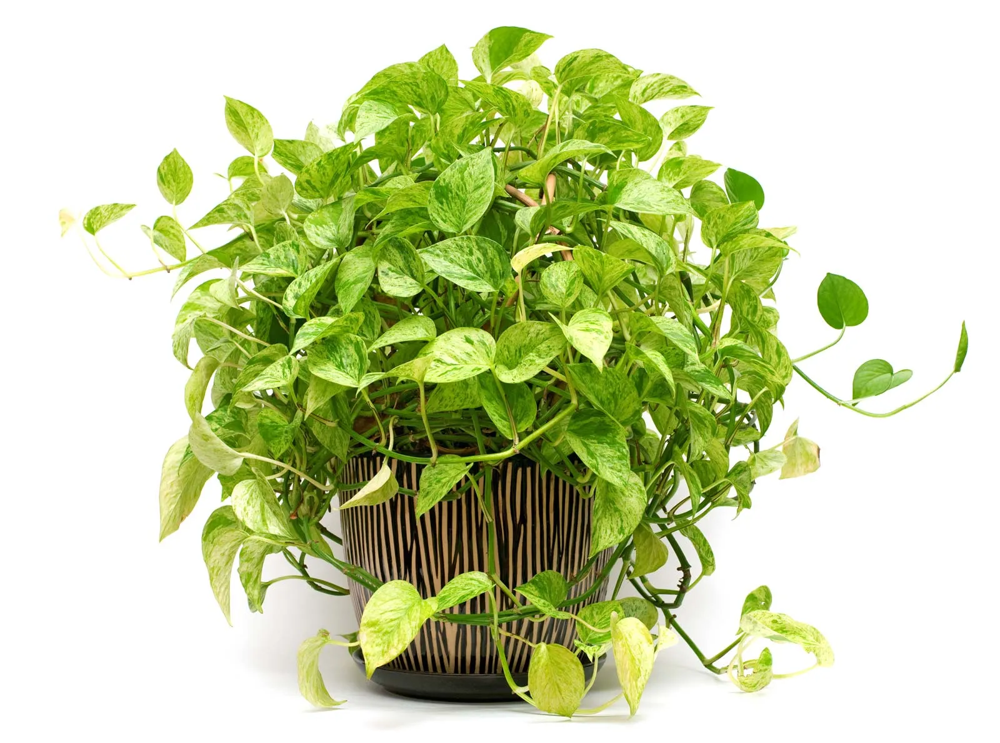
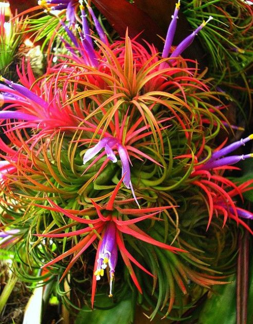
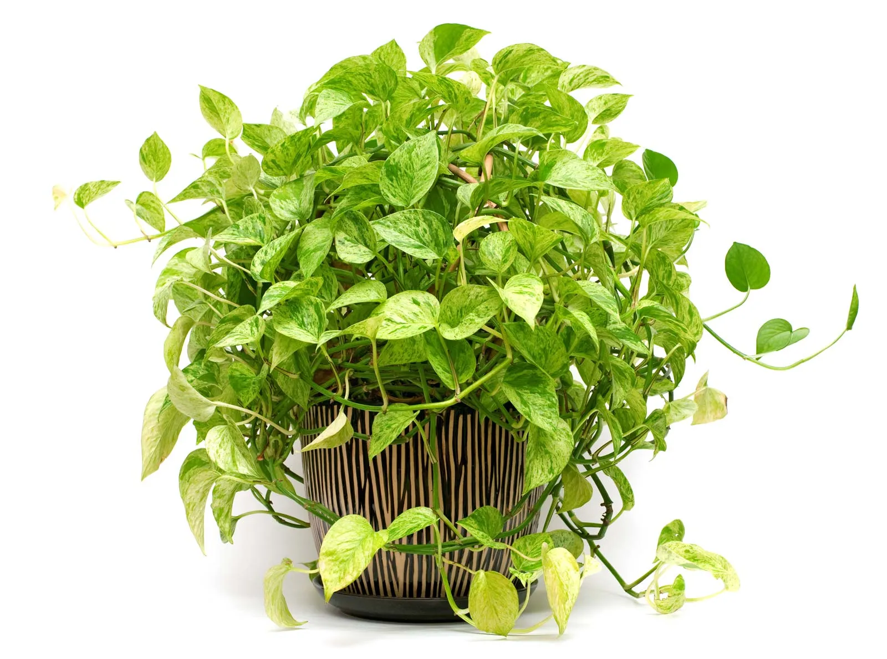
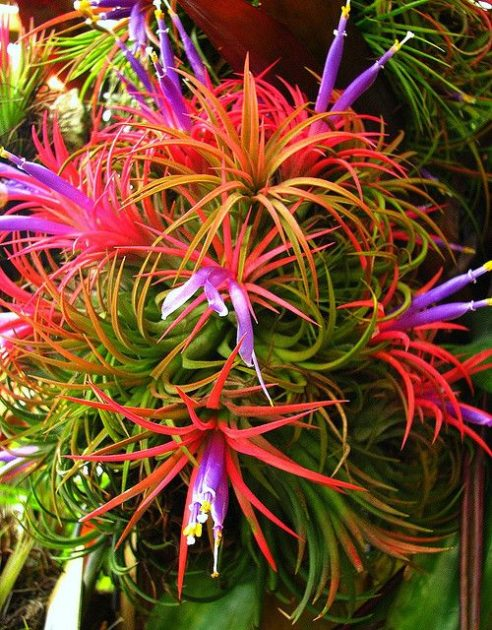
Types Of Rainwater terrarium


Survey Report of Rainwater Harvesting Model In Malaysia:
Implementation of Rainwater Harvesting in Malaysia In Malaysia, rainwater harvesting system was officially introduced after the 1998 drought by MHLG. The 1999 ‘Guidelines for Installing a Rainwater Collection and Utilization System’ can be seen as the initial phase of the rainwater harvesting policy in Malaysia. The main purpose of these guidelines is to reduce the dependence on treated water and provides a convenient buffer in times of emergency or a shortfall in the water supply. It also proposed the construction of ‘mini dams’ or rainwater tanks in urban area instead of continuing to build giant dams upstream (Mohd.-Shawahid et al., 2007). This guidelines is intended as an ‘ideal manual’ for reference for those who want to install a rainwater harvesting and utilization system (MHLG, 2008) After five years of this guidelines, namely in 2004, the MHLG has prepared another cabinet paper to the National Water Resources Council to encourage government buildings to install a rainwater collection and utilization system. The Council has later announced that rainwater utilization is to be encouraged, but not mandatory. The Department of Irrigation and Drainage and The Ministry of Energy, Water and Communication (KTAK) (now is known as Ministry of Energy, Green Technology and Water (KTTHA); due to the restructuring of cabinet as announced by the Prime Minister of Malaysia on April, 9 2009) are the other two government agencies that implement the rainwater harvesting system in the early. The acceptance on rainwater harvesting system in the beginning is not good enough. Only few areas like Sandakan and Shah Alam that has introduced rainwater harvesting system in new housing developments (Mohd.- Shawahid et al., 2007). National Hydraulic Research Institute of Malaysia (NAHRIM) that established under Ministry of Natural Resources and Environment in 2004 is also one of the agencies that carried out pilot projects for rainwater harvesting system. The projects are (i) double storey terrace house located at Taman Wangsa Melawati, Kuala Lumpur, (ii) Taman Bukit Indah Mosque, Ampang and (iii) Headquarters of the Department of Irrigation and Drainage, Kuala Lumpur (Jamaluddin and Huang, 2007). In support of the government’s interest in RWH, NAHRIM also actively involved in designing and installing rainwater harvesting system for several schools (Mohd.-Shawahid et al., 2007). In 2005, the Federal Constitution has been transferred all matters related to water supply services from State List to Concurrent List (Mohd.-Shawahid, et. al. 2007). This enable the Federal Government involvement in the water services sector and to establish regulated water services industry. Due to this, KTTHA has come up with two new water related laws; Water Services Industry Act 2006 and Water Services Commission Act 2006. In the new act, the Ministry is actively involved in the water saving programs which encouraging rainwater harvesting system implementation. Figure 1 showing the development of rainwater harvesting implementation development in Malaysia since 1975 until present.


This report discussed about the respondents’ perceptions towards RWH system. It gives insight in the move of RWH in Malaysia. Various government agencies are actively involved in promoting rainwater harvesting system. In ensuring its success, the respondents’ perception has to be gauged as to give some feedback to the government and the implementer. The key point from this study is there is a positive move in the implementation of RWH i.e. almost 60 to 65% of the respondents interested in implementing RWH and willing to install the rainwater tank. On the implementation issue, the benefits of RWH has to be widely publicised, perhaps by using mass media as to promote the RWH to public at large. With the strong move by construction industry professional via Green Building Index (GBI), we can expect the active implementation of RWH in the near future more..
How Can this Website Contribute To Climate Change Education
A website on rainwater terrariums can contribute to climate change education in several ways by promoting sustainable practices, environmental awareness, and conservation efforts.
Here are some ways a website on rainwater terrariums can help in climate change education:
Promoting Sustainable Practices:
Explain how rainwater terrariums promote sustainability by using rainwater, a natural resource, for plant care.
Provide information on how rainwater harvesting can reduce the demand on conventional water sources, contributing to water conservation.
Highlighting Environmental Benefits:
Discuss the environmental benefits of rainwater terrariums, such as reducing runoff and soil erosion.
Emphasize how creating green spaces, even on a small scale, contributes to improved air quality and biodiversity.
Educating on Climate-Resilient Gardening:
Share tips on creating climate-resilient terrariums, including plant selection, water-efficient gardening techniques, and adapting to changing weather patterns.
Discuss the importance of choosing plants that are well-suited to the local climate to reduce the need for excessive water and maintenance.
Showcasing the Impact of Individual Actions:
Highlight how individuals can make a positive impact on the environment through small actions like creating rainwater terrariums.
Encourage users to share their own terrarium projects and success stories to inspire others to take similar actions.
Providing Educational Resources:
Offer resources such as articles, videos, and infographics explaining the science behind rainwater terrariums, the water cycle, and the broader impacts of climate change.
Include guides on sustainable gardening practices, eco-friendly materials, and responsible consumption.
Community Building:
Create a community forum or social media platform where users can share their experiences, ask questions, and learn from each other.
Foster a sense of community and shared responsibility for environmental stewardship.
Collaborating with Environmental Organizations:
Partner with environmental organizations to promote climate change awareness and collaborative initiatives.
Provide links to reputable organizations working on climate change and environmental conservation.
Encouraging Responsible Consumption:
Advocate for responsible consumption habits, such as reducing single-use plastics and choosing eco-friendly products for terrariums.
Discuss the environmental impact of various materials used in gardening and encourage sustainable choices.
Contact Us
Have questions or want to share your rainwater terrarium experience? Reach out to us!

rainwater.terrariums@34gmail.com